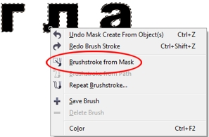
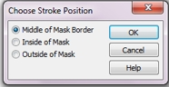

Обводка для текста
Инга / 12.02.2012, 16:21/00:41
Форум:
Подскажите, пожалуйста, последовательность шагов, как в CorelPHOTO-PAINT задать тексту обводку? Мне нужен текст одного цвета и обводка у него другого цвета.
Спасибо.
Подскажите, пожалуйста, последовательность шагов, как в CorelPHOTO-PAINT задать тексту обводку? Мне нужен текст одного цвета и обводка у него другого цвета.
Спасибо.
Обводка текста в PHOTO-PAINT может не получиться так, как Вы того ожидаете. Но последовательность действий такая:
1. Создаете текст.
2. Переключаетесь на инструмент Object Pick. Текст автоматически станет выделенным и "превратиться" в объект.
3. Нажимаете комбинацию клавиш Ctrl + M. Этим действием, Вы создадите из текста маску.
4. Переключаетесь на инструмент Paint, горячая клавиша Р.
5. Задаете цвет обводки на палитре или другим способом.
6. На тексте (который теперь представляет из себя маску) щелкаете правой кнопкой мыши и в меню выбираете команду Brushstroke from Mask.

7. В диалоговом окне Choose Stroke Position выбираете один из вариантов: Middle of Mask Border или Outside of Mask.

На что надо обратить внимание. Первое, подобрать удачно шрифт и его размер. Желательно использовать шрифт попроще, без всяких там "завитушек". Шрифт выбрать пожирнее, например, Arial Black. Разрешение документа выбрать побольше, можно 300 dpi. Размер кисти должен быть небольшой, 1-3 px, в крайнем случае 5 px, большего размера разве только, если Вы плакат на А0 делаете. На Панели свойств инструмента Paint можете отключить режим Anti-aliasing (Сглаживание). Ну, и поэкспериментируйте сначала для получения нужного эффекта. Ниже пример того, что может получиться.
Большое спасибо за познавательный и развернутый ответ!
Результат обводки приведенным способом всегда меня огорчал, поэтому я выработал свой метод, который неплохо работает при низких разрешениях и если нужна тонкая обводка в 1-2 пикселя.
1. Пишем текст.
2. Переключаемся на Object Pick Tool
3. Делаем маску у текста Ctrl + M
4. Идем в меню Mask > Mask Outline > Expand. В появившемся окне задаем толщину желаемой обводки. При клике на ОК наша маска увеличивается вовне.
5. Снова переключаемся на Object Pick Tool и кликаем на фоне документа (или в докере Objects выбираем самый нижний Background).
6. Переключаемся на Mask Tool (клавиша R) и нажимаем Ctrl + Up Arrow, тем самым создавая новый объект из фона документа; этот объект и является теперь обводкой нашего текста.
7. Закрашиваем объект-обводку текста нужным цветом. Я использую при этом сочетание Ctrl + Backspace и в появившемся окне не забываю кликнуть по кнопке Lock, которая эквивалентна функции Lock Object Transparency.
Таким образом мы получаем довольно точную обводку для текста в отдельном "слое", которую потом бывает удобно сгруппировать с самим текстом на случай, если позже потребуется изменить цвет обводки.
Есть еще один способ создания тонкой обводки вокруг текста, "антинаучным". Основан на тупой моторике и делается почти на автомате.
Есть у нас, к примеру, выбранный Pick Tool'ом текстовой объект, на самом верху докера Objects. Далее:
Ctrl + D, DnArrow, RightArrow, Ctrl + D, LeftArrow, LeftArrow, Ctrl + D, UpArrow, UpArrow, Ctrl + D, RightArrow, RightArrow
Затем выделяем в докере Objects четыре появившихся таким образом объекта и "сливаем" их в один общий (Ctrl + Alt + DnArrow), после чего смещаем его под текст (Ctrl + PgDn) и красим в нужный нам цвет обводки.
Работаю пока в X3, поэтому если что в проге радикально изменилось, то я в домике )